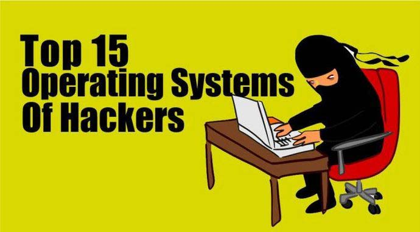
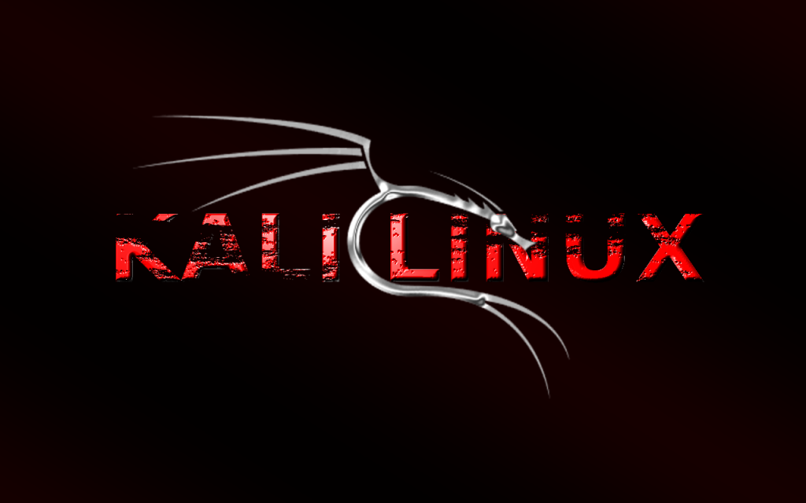
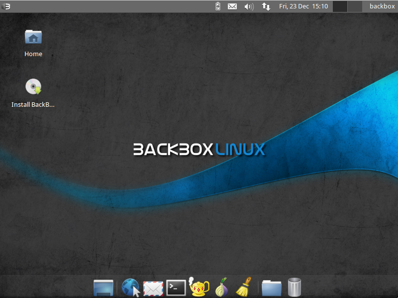
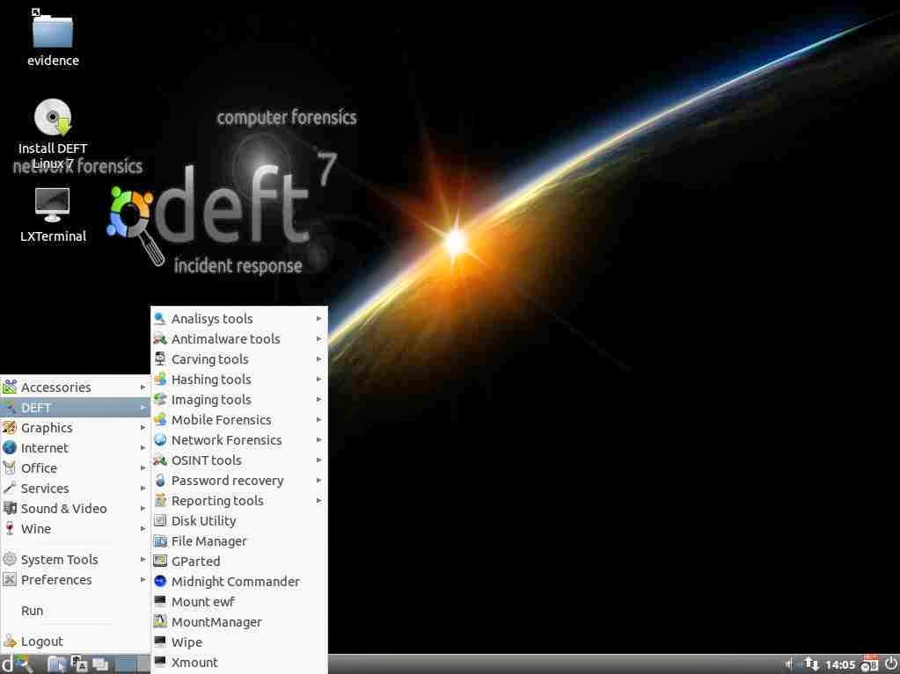
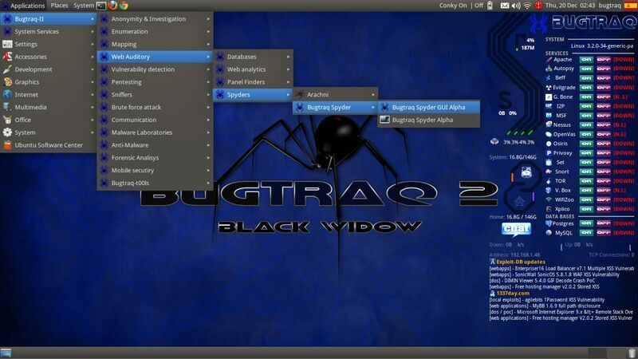
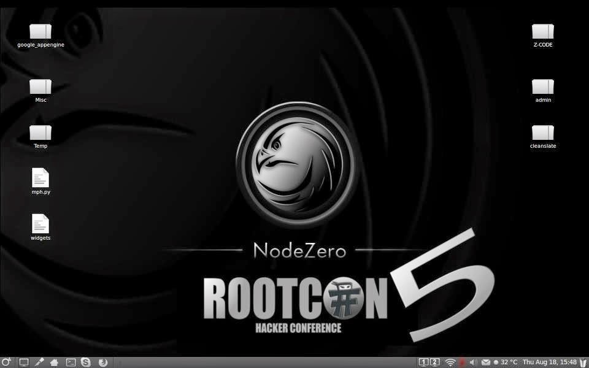
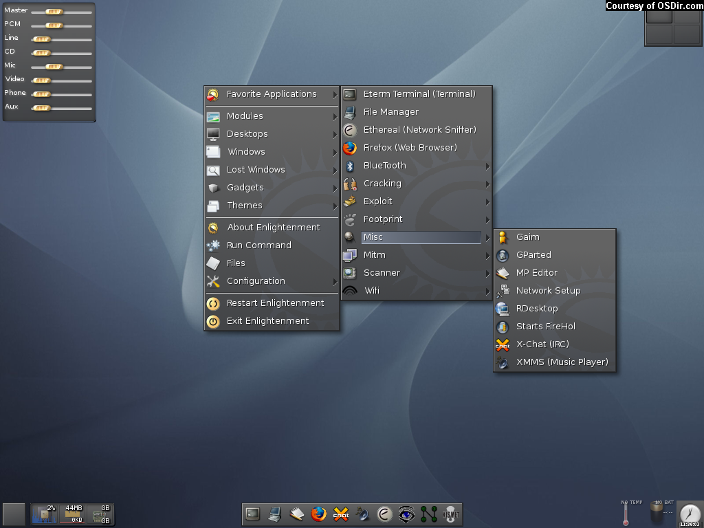
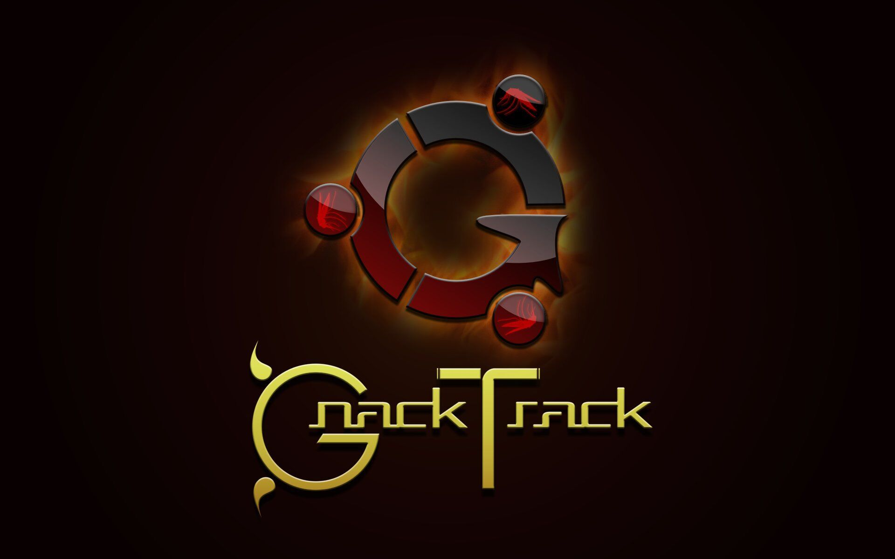
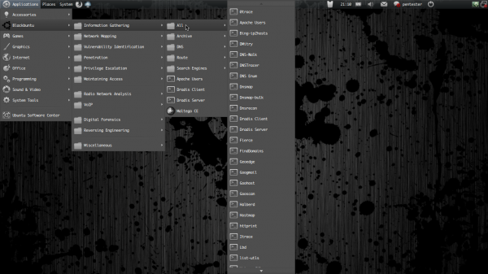
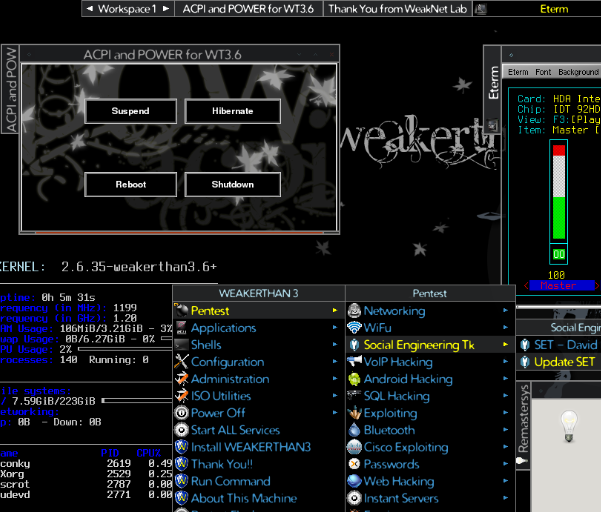

这里我们列举出15个用于渗透测试的操作系统。 其中，我最喜欢的非Kali Linux莫属，毫无疑问Kali也是最受欢迎的，它的开发团队与BackTrack相同（Offensive security）。 这里我并没有将BackTrack列入，因为官网已经没有更多它的可用版本，而BackTrack的下一版就是Kali Linux。 这里所有的操作系统都是基于Linux内核的，所以它们也都是免费的（文中提供了下载链接）！

Kali Linux是一个用于数字取证和渗透测试的基于Debian发行版，它由Offensive Security公司开发并维护。 Mati Aharoni和Devon Kearns重写了BackTrack，因此才有了它。 Kali Linux是最为万能并且先进的渗透测试工具发行版操作系统。 Kali工具经常更新，还可以用于其他一些平台，例如VMware和ARM，如果你想了解更多关于Kali Linux的信息，可以阅读另一篇文章。

它包含一些最为常用的Linux安全及分析工具，而且使用客体十分广泛，从Web应用程序分析到网络分析，从压力测试到嗅探，还涵盖了漏洞评估、计算机取证分析以及漏洞利用。
这个发行版的强大之处在于它的Launchpad它自己的软件仓库，该仓库总是同步到最新版本的、最常用且以合乎道德而闻名的黑客工具。
Parrot Security是一个款Frozenbox Dev团队开发的、基于Debian GNU/Linux的操作系统，混合了Frozenbox OS和Kali linux得以提供最优质的渗透测试体验。
为了对几乎所有工具进行最及时的更新，Parrot使用了Kali的库，但它也有自己存放了所有自定义数据的专用库。它加入了一些新的特性和不同的开发选项，Parrot使用Mate作为桌面环境。Lightweight和有力的界面来自著名的Gnome2，多亏了FrozenBox高度自定义图标、主题及壁纸。

DEFT（数字证据及取证工具箱）是一份定制的Xubuntu自启动运行Linux光盘发行。它是一份易于使用的系统，包含了最佳的硬件检测，以及一些专用于应急响应和计算机取证的最好的开源应用软件。

Live Hacking是基于linux，具备可用于道德攻击或者渗透测试的有强大的黑客工具。它为用户提供了一个内置GNOME图形界面。还有一个可用变更，由于它可以仅支持命令行，因此对硬件的要求极少。CD包含的工具种类：DNS、信息探察、密码破解、网络嗅探、欺骗(或伪装)和无线网络工具。

Samurai Web Testing Framework是一个基于live linux环境下的系统，已经预制了web渗透测试环境。CD包含了许多优秀的开源和免费测试工具。在环境开发中，我们已经将用于安全实践的工具置于其中，我们将Web渗透测试四个步骤的工具都囊括在这里。
.jpg)
Network Security Toolkit（NST）基于Fedora Core。这份工具包（自启动ISO）能够方便地使用最好的开源网络安全工具，并能在大多数x86平台上运行。
开发该工具包的主要目的是向网络安全管理员提供一套较全面的开源网络安全工具。我们发现NST非常有吸引力，因为我们可以用这份自启动运行光盘将大多数x86系统（奔腾II或更高级的处理器）转换为 一份特定设备，同时该环境可以支持多种安全检测工具，它可以执行网络流量分析，入侵监测，网络包注入，无线网络监控，模拟系统服务，或是用作一台精密的网络/主机扫描器。

BugTraq是一个完整的对计算机安全漏洞（它们是什么，如何利用它们，以及如何修补它们）的公告及详细论述进行适度披露的邮件列表。讨论主题包括漏洞、安全公告、漏洞利用方式以及如何修复等。这是一个高容量的邮件列表，几乎包括了所有的最新漏洞。
Bugtraq团队是一个非常有经验的极客和开发者组织。大多数安全技术人员订阅Bugtraq，因为这里可以抢先获得关于软件、系统漏洞和缺陷的信息，还可以学到修补漏洞和防御反击的招数。

俗话说“需要是发明之母”，NodeZero Linux 就是这样。他们的团队由测试员和开发人员组成，他们觉得live系统没能提供他们安全审计是需要的东西。渗透测试系统往往会用linux中的Live系统概念，就是说用户不能够对系统造成任何永久的更改。因此重启之后所有的修改就没有了，而且还得从光盘或者USB运行。这些特定对那些偶尔测试的人会造成麻烦，对经常测试的人比较有用。
尽管NodeZero Linux可以以live系统形式偶尔使用，但它的团队还是认为真正好用的系统应该强大、高效、稳定，所以系统提供了永久的安装。

Pentoo是一款Live CD、 Live USB，专为渗透测试和安全评估之用。Pentoo基于Gentoo Linux，提供了32位和64为的live cd。Pentoo还可以覆盖已经安装了的Gentoo系统。它的功能有数据包注入、GPU破解软件等。Pentoo内核有grsecurity和PAX加固，和一些其他的补丁——包括从加固的toolchain编译的二进制文件。系统中的很多工具有最新的nightly（每日构建）版。

GnackTrack是一个开放、自由的项目，目的是将渗透测试工具与linux Gnome桌面相整合。GnackTrack是一款Live（也可安装）的基于Ubuntu的Linux发行版。
BackTrack不是唯一一款针对伦理黑客的工具，你也可以试试其他的系统，如果你喜欢Gnome，那就试试这款好了。就像BackTrack一样，Gnacktrack包含很多工具，这些工具对渗透测试很有帮助：包括Metasploit、armitage、wa3f等。

Blackbuntu是一套专门为安全训练的学习者和信息安全的练习者准备的渗透测试系统。Blackbuntu的桌面环境使用的是GNOME。系统目前基于Ubuntu 10.10。

Knoppix STD (Security Tools Distribution，安全工具发行版)是一款Live CD linux发行版。这款系统基于Knoppix，后者致力于研究计算机安全工具。系统包含如下种类的工具：验证、密码破解、加密、取证、数据包嗅探、汇编、漏洞评估和无线网络。Knoppix STD的0.1版发布与2004年1月24日，基于Knoppix 3.2。之后这个项目停滞了，缺少更新的驱动和包。0.2版本尚不知何时发布。其官网上有工具列表。

Weakerth4n是一套基于Debian Squeeze的渗透测试系统。它的桌面环境用的是Fluxbox。这套系统很适合WiFi hacking，因为其中包含了大量的无线工具，包括无线破解的工具。它的网站建设得很好，还有一个非常热心的社区。
其中的工具包括： Wifi攻击，SQL注入、Cisco Exploitation，密码破解、Web Hacking，蓝牙，VoIP hacking，社会工程学、信息收集、Fuzzing Android Hacking、创建shell等。

这应该是最高级，最厉害，也是最漂亮的渗透测试系统了。其中包含了很多给专业的伦理黑客、网络安全专家们提供的优秀工具。这套系统中含有700多种工具，而kali有300+，系统中还有很多针对移动安全和恶意软件分析的工具。这是个基于Ubuntu的新的操作系统，我还没有测试过，所以我把它列在最后。
Cyborg Hawk系统由来自Ztrela Knowledge Solutions Pvt. Ltd 公司的Cybord团队开发，由Vaibhav Singh 和 Shahnawaz Alam带头。